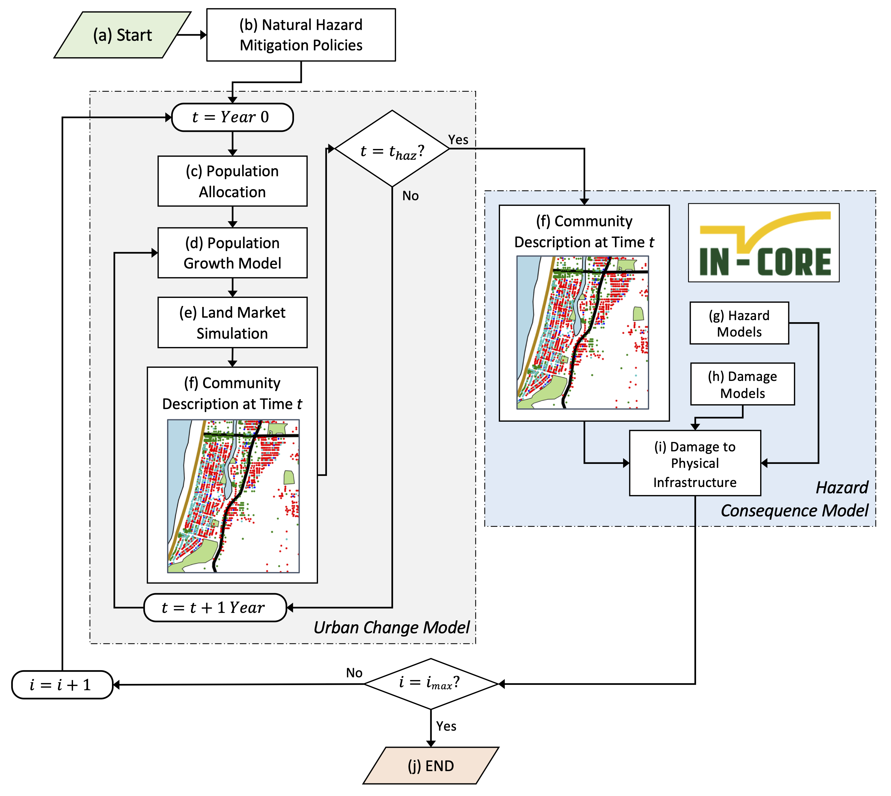

Details
Contents
Details¶
Initialization¶
The model is initialized with spatial representations of: (1) parcels in a community, (2) pertinent features such as the coastline, central business district, community assets, and greenspaces, and (3) a zoning layer. With this information, an initial parcel data frame is constructed that represents the parcels and contains spatial information such as the distance to pertinent features and the zone that the parcel is in. A population and housing unit allocation (c in the flowchart representing model processes) stochastically assigns individuals to each parcel using US Census data (Rosenheim et al., 2019). All of the features in this initial data frame are provided in the table below.
Variable |
Description |
|---|---|
guid |
Globally unique identifier for the parcel; if an agent is in a parcel, this is the same as the agent’s “pos” |
struct_typ |
Structure type; Hazus fragility curves are used for the damage and loss analysis and therefore the structure types are from Hazus; for this work, these include W1 (light-frame wood), W2 (mid-rise wood), C1L (low-rise concrete) and C1M (mid-rise concrete). |
year_built |
Year of construction or year built |
no_stories |
Number of stories |
dgn_lvl |
Design level representing the seismic code the building; units of meters |
d_commasst |
Distance to community asset; units of meters |
d_coast |
Distance to coast; units of meters |
d_cbd |
Distance to central business district; units of meters |
zone |
Unique identifier for the zone that the parcel is in |
zone_type |
Type of zone that the parcel is in; options considered here include: open space (OS), residential (R), residential-high density (R_HD), seasonal rental (SR), and commercial (C); additional zones can be considered by modifying the input zoning layer and zoning_params file |
numprec |
Number of people in the parcel from the housing unit allocation |
landuse |
Initial land use of the parcel inferred from the housing unit allocation |
owner_type |
Type of agent that owns the parcel |
max_n_agents |
Maximum number of agents that can occupy the parcel |
x |
x-location of the parcel; EPSG:26910 – NAD83/UTM zone 10N is used here |
y |
y-location of the parcel; EPSG:26910 – NAD83/UTM zone 10N is used here |
Input¶
Input to the model consists of both shapefiles and CSZ files.
Shapefiles¶
The table below describes the shapefiles.
Beach.shp¶
This is a line layer representing the coast for the model run.
Attribute |
Description |
|---|---|
ID |
ID for beach line |
{kind=link}
Buildings.shp¶
This is a point layer representing the buildnigs/parcels for the model run.
Attribute |
Description |
|---|---|
Guid |
Globally unique identifier for the parcel; if an agent is in a parcel, this is the same as the agent’s “pos” |
Struct_typ |
Structure type; Hazus fragility curves are used for the damage and loss analysis and therefore the structure types are from Hazus; for this work, these include W1 (light-frame wood), W2 (mid-rise wood), C1L (low-rise concrete) and C1M (mid-rise concrete). |
Year_built |
Year of construction or year built |
No_stories |
Number of stories |
Dgn_lvl |
Design level representing the seismic code the building; units of meters |
{kind=link}
CBD.shp¶
This is a polygon layer representing the central business district (CBD).
Attribute |
Description |
|---|---|
ID |
ID for central business district |

CommunityAssets.shp¶
This is a point file representing community assets in the model.
Attribute |
Description |
|---|---|
ID |
ID for community assets |
Type |
Type of community asset (e.g., school, library, hospital) |
Name |
Name of community asset (e.g., SeasidePostOffice, SeasideFireDepartment) |
{kind=link}
Greenspace.shp¶
This is a polygon layer representing greenspace in the model
Attribute |
Description |
|---|---|
ID |
ID for greenspace |
{kind=link}
Zoning.shp¶
This is a polygon layer representing zoning in the model. It needs to align with the zoning.csv file below.
Attribute |
Description |
|---|---|
guid |
Globally unique identifier for zone |
zone_abbr |
Zone abbreviation; must also be in the zoning_param.csv input file |
ZONING |
Description of zone |
{kind=link}
CSV Files¶
The following CSV files are also read as input to the model.
Input.csv¶
Provides general input to the model
Variable |
Default Value |
Description |
|---|---|---|
n_years |
30 |
number of years to simulate per iteration; time of hazard occurring |
n_sims |
50 |
number of simulations/iterations |
hazard_recurrence |
500 |
hazard recurrence interval (100, 250, 500, 1000, 2500, 5000, 10000) |
seed |
1337 |
seed for simulations |
distance_decay_exponent |
0.0008 |
Used to parameterize distance decay function |
max_n_LOSR |
100000 |
cap on number of low occupancy seasonal rentals |
age_alpha |
15 |
Alpha term for parameterizing gamma distribution for sample of agent age |
age_theta |
2.667 |
Theta term for parameterizing gamma distribution for sample of agent age |
nhousehold_alpha |
5 |
Alpha term for parameterizing gamma distribution for sample of number of people in household |
nhousehold_theta |
0.44 |
Theta term for parameterizing gamma distribution for sample of number of people in household |
nvisitor_alpha |
10 |
Alpha term for parameterizing gamma distribution for sample of number of people in visitor group |
nvisitor_theta |
0.4 |
Theta term for parameterizing gamma distribution for sample of number of people in visitor group |
Household_budget_mean |
800 |
Household agent budget mean; used to parameterize normal distribution |
Household_budget_std |
200 |
Household agent budget standard deviation; used to parameterize normal distribution |
Household_price_goods |
70 |
Cumulative price of other goods that agent considers when making bid (food, education, entertainment, etc.). Parameterizes WTP |
Household_number_parcels_aware |
10 |
number of parcels agent is aware of when searching market |
Household_number_searching |
400 |
Constant number of households in model space searching for parcel |
Household_change_rate |
5 |
Average number of years that parcel household has same number of people |
Landlord_budget_mean |
800 |
Landlord agent budget mean; used to parameterize normal distribution |
Landlord_budget_std |
200 |
Landlord agent budget standard deviation; used to parameterize normal distribution |
Landlord_price_goods |
70 |
Cumulative price of other goods that agent considers when making bid (food, education, entertainment, etc.). Parameterizes WTP |
Landlord_number_parcels_aware |
20 |
number of parcels agent is aware of when searching market |
Landlord_number_searching |
200 |
Constant number of landlords in model space searching for parcel |
Landlord_transition_penalty |
0.35 |
Penalty for landlord transitioning from one state to another |
Firm_budget_mean |
2000 |
Firm agent budget mean; used to parameterize normal distribution |
Firm_budget_std |
50 |
Firm agent budget standard deviation; used to parameterize normal distribution |
Firm_price_goods |
70 |
Cumulative price of other goods that agent considers when making bid (food, education, entertainment, etc.). Parameterizes WTP |
Firm_number_parcels_aware |
20 |
number of parcels agent is aware of when searching market |
Firm_number_searching |
3 |
Constant number of firms in model space searching for parcel |
Visitor_number_parcels_aware |
10 |
number of parcels agent is aware of when searching market |
RealEstate_LandBasePrice |
150 |
Real estate agent base price for land |
AllowNew_OwnedRes |
1 |
Boolean for allowing new owned residential development |
AllowNew_RentalRes |
1 |
Boolean for allowing new rental residential development |
AllowNew_LOSR |
1 |
Boolean for allowing new LOSR development |
AllowNew_HOR |
1 |
Boolean for allowing new HOR development |
AllowNew_HOSR |
1 |
Boolean for allowing new HOSR development |
Zoning_params.csv¶
Maps the zoning abbreviations to the different land uses. The zoning abbreviations must match those in the Zoning.shp file. Each row corresponds to a zone, and each column to a land use. Default values are provided below. Boolean values are represented as 1 (True) and 0 (False).
Zone |
unoccupied |
owned_res |
rentl_res |
ho_res |
losr |
hosr |
comm |
|---|---|---|---|---|---|---|---|
OS |
1 |
0 |
0 |
0 |
0 |
0 |
0 |
R |
1 |
1 |
1 |
0 |
1 |
0 |
1 |
R_HD |
1 |
1 |
1 |
1 |
1 |
0 |
1 |
SR |
1 |
0 |
0 |
0 |
1 |
1 |
1 |
C |
1 |
0 |
0 |
1 |
0 |
1 |
1 |
BuildingCodes.csv¶
Input file describing mandatory building codes when a new change of hands occurs.
Variable |
Description |
|---|---|
from |
Initial land use before change of hands |
to |
New land use that the new owner is considering updating the parcel to |
percent_cost |
Percent of base price that the building code costs. This is used in the owner WTP calculations. |
to_code_level |
The code level that the building must go to. |
Required |
Boolean indicating whether the change is required. Boolean values represented as True/False |
PopulationGrowth.csv¶
Input file describing deterministic population projections. These are provided for both full time residents and visitors
Variable |
Description |
|---|---|
Tick |
Time step in model. Starts at 0; must be in 5-year increments |
FullTimeResidents |
Number of full time at the time step |
Visitors |
Number of visitors at the time step |
Year |
Year in actual model; this column is not used in the model, but rather provided for the user |
PreferenceMatrix.csv¶
Matrix describing preferences. If a standard deviation is provided, the preferences are sampled from a normal distribution parameterized on a mean and standard deviation. An example preference matrix is provided below. In this case, a household agent’s preference for parcels near the coast will be sampled from a normal distribution with N(0.3, 0.2).
household |
visitor |
Landlord - rentl_res |
Landlord - losr |
Firm - hor |
Firm - hosr |
|
|---|---|---|---|---|---|---|
α_coast |
0.3 |
0.7 |
0.2 |
0.4 |
0.15 |
0.15 |
α_commast |
0.7 |
- |
0.4 |
- |
0.15 |
- |
α_cbd |
- |
0.3 |
- |
0.2 |
- |
0.15 |
α_mrkt |
- |
- |
0.4 |
0.4 |
0.7 |
0.7 |
σ |
0.2 |
0.2 |
0.1 |
0.1 |
0.1 |
0.1 |
TaxLot2Bldg.csv¶
Optional input file that maps tax-lots to a single building. This is provided because some tax-lots in Seaside are contained within a single building (a condo containing multiple tax-lots). In the model, one building is represented as a parcel rather than the many tax-lots located therein. If not using, leave this file blank with the columns provided.
Variable |
Description |
|---|---|
guid |
Globally unique identifier for the parcel |
rep_guid |
Representative GUID that all parcels in the GUID column will be mapped. |
max_n_agents |
Maximum number of agents in the building; that is, the number of tax-lots that are represented. |
CommercialBuildingMapping.csv¶
Optional file describing which parcels are commercial buildings in the community. These are assumed static and do not change with this version of the model. If unknown, leave this file blank with the column provided.
Variable |
Description |
|---|---|
guid |
Globally unique identifier of the parcels that are commercial buildings |
Submodels¶
The figure below shows a flowchart representation of the modeling framework. The urban change model is shown with the grey dash-dot box on the left, whereas the hazard consequence model, IN-CORE, is shown with the blue dash-dot box on the right. This section describes each submodel of the flow chart in more detail.
{kind=link}
(b) Natural Hazard Mitigation Policies¶
This is a set of policies that are imposed on the modeling environment and constrains the overall model. By simply modifying the input outlined above, policies to consider could include caps on the number of low occupancy seasonal rental parcels, enforced building codes, relocating community assets, creating new green spaces, rezoning, and limiting new development of particular land uses. The user could also modify the source code to include additional policies outside of those that are controlled by input files.
(c) Population Allocation¶
This submodel represents the housing unit allocation algorithm in IN-CORE (Rosenheim et al., 2019). This submodel takes publicly available US Census data and stochastically downscales it to the parcel-level. This results in the number of people in each parcel. From the housing unit allocation, the initial land uses are inferred.
Relevant functions:
housing_unit_allocation()
assign_property_types()
(d) Population Growth Model¶
The population growth submodel adds more agents to the model based on the values provided in the input file. Note that this submodel adds agents to the general model space. That is, they are not assigned to a parcel yet, but are in the market looking to purchase a parcel. In this submodel, the household, visitor, landlord, and firm agents are increased. In addition, this submodel represents population outmigration. Population outmigration occurs if the number of people in parcels exceed the values provided in the input file PopulationGrowth.csv.
{kind=link}
Relevant functions:
PopulationGrowth!()
PopulationOutMigration!()
(e) Land Market Simulation¶
Household, landlord, and firm agents are competing in a landmarket attempting to purchase parcels that meet their preferences. The landmarket is an extension of the ALMA and ALMA-C models (Filatova et al., 2009; Filatova et al., 2011). The model presented herein considers six agents whereas ALMA only considers two agents: buyer and seller. As in ALMA, agents competing in the land market compute their willingness to pay (WTP) for a parcel. Here, the WTP is modified to account for structural retrofits as:
Where Y is the agent budget sampled from a normal distribution, U is the utility of the parcel, b represents costs of other goods, and where ϵ is computed as ϵ=(NB-NS)/(NB+NS), with NB number of buyers and NS number of sellers. The final two terms of the equation above were not in the ALMA model formulation and were added to account for costs associated with structural retrofits. Here, ρ is a constant between 0 and 1 parameterized on the transition between retrofit levels, e.g., low- to moderate-seismic code vs. low- to high-seismic code (see BuildingCodes.csv), and m is the market value of the parcel provided by the real estate agent. This term is subtracted to account for the additional costs an agent would incur if retrofits were mandatory. The utility, U, is computed using a Cobb-Douglas utility function as:
Where Pi is a normalized value (0-100) representing either proximity to a particular feature or market pressure, αi weights the importance of this feature to the agent representing preferences, and n are the number of features considered. The preference weights, α, for each agent are sampled from a normal distribution and rescaled such that they sum to 1. Proximity is computed using a scaled distance decay function and market pressure is based on the number of buyers and sellers
Where d is distance to the feature and k is a tunable parameter.
Relevant functions:
SimulateVisitorMarketStep!()
SimulateMarketStep!()
(f) Community Description at Time t¶
The community description at time t includes the structural properties, seismic codes, land uses, parcel owners, and number of people in each parcel.
Relevant functions:
UpdateModelCounts!()
(g) Hazard Models¶
Hazard models are spatially explicit representations of natural hazards. For the Seaside testbed tehse were previously developed as a part of a probabilistic seismic and tsunami hazard analysis (Park et al., 2017; Cox et al., 2022). The PSTHA resulted in hazard maps for seven recurrence intervals (100, 250, 500, 1000, 2500, 5000, and 10000-year). The user can select which hazard recurrence interval to consider as input to the model in Input.csv. The hazard maps are available in the IN-CORE data service which is called at runtime. No hazard layers need to be provided locally.
(h) Damage Models¶
Damage models are fragility functions that describe the probability of exceeding a damage state given a hazard intensity measure. Here Hazus seismic and tsunami fragility curves are employed. The fragility curves are represented as lognormal distribution functions parameterized on a median and dispersion. The fragility curves are mapped to each buildng type and seismic-code level. The fragility curves are available on the IN-CORE data service which is called at runtime and thus not needed locally. The figure below shows an example of seismic fragility curves for a light-frame wood structure for different seismic-code levels.
{kind=link}
(i) Damage to Physical Infrastructure¶
Damage to physical infrastructure is modeled using IN-CORE. IN-CORE maps the spatially explicit hazard intensity measures of (g) to the community description of (f) using the damage models of (h). The hazard occurs in the model at the time step specified by the user in Input.csv. When this step occurs, the model constructs the building data frame necessary to be provided as input to IN-CORE. Using the fragility curves of (h), the probability of each parcel being in different damage states is provided. The expected damage state is computed using these probabilities and one random sample of damage state is computed. Examples of damage to infrastructure include: Park et al., 2019, Kameshwar et al., 2019, and Sanderson et al., 2021.
Relevant functions:
csz!()
pyincore_CSZ()
bldg_dmg_eq()
bldg_dmg_tsu()
bldg_dmg_cmltv()